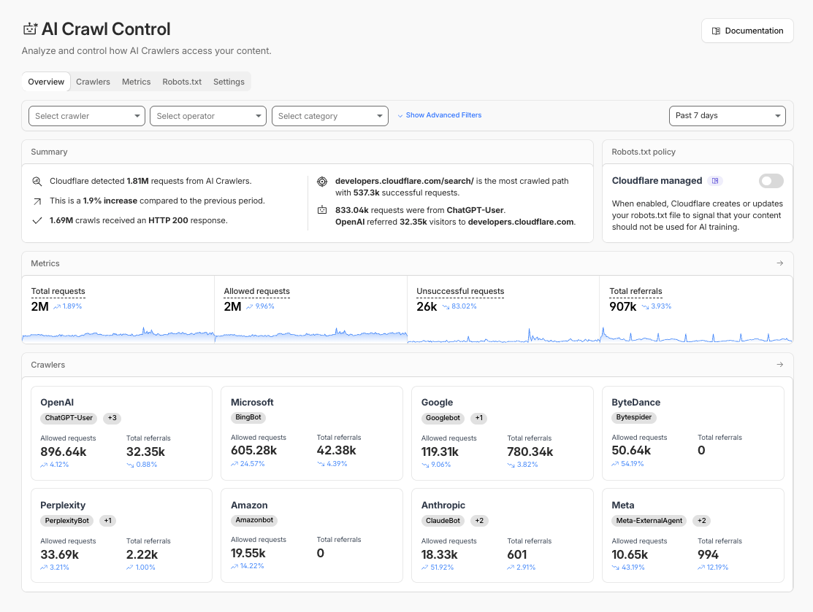

AIの学習には使わせたくない一方、AI検索からは読者に来てほしい。この2つを分けるには、アクセスしているクローラーの種類と役割を確認する必要があります。Cloudflareの公式画面で、観測できる情報と制御できる範囲を見ていきます。

公式画面では観測と制御が分かれている
CloudflareのOverviewは、AIクローラーからの要求、成功・失敗、流入、よく読まれるパスを並べています。ここで先に見るのは「何件来たか」より、どのクローラーがどのパスを読み、読者を戻しているかです。
制御はCrawlersタブで行います。許可、遮断、提供中なら課金をクローラーごとに選びます。遮断はWAFの個別規則へ反映されます。
robots.txtは強制認証ではない
RFC 9309が定めるrobots.txtは、クローラーへ取得可否を伝える規約です。アクセス制御や本人確認の仕組みではありません。従うクローラーには有効ですが、無視するクライアントを通信で止める力はありません。
そのため、robots.txt違反の観測とWAFでの強制適用を分けます。規約に従う相手へは明確な指示を出し、従わない通信は規則で止めます。
クローラーごとに価値と負荷を見て決める
一括遮断すると、検索・回答サービスからの流入まで失う可能性があります。運営者、目的、要求量、対象パス、流入を見て決めます。会員向け資料や原価表のパスは厳しく、公開記事は引用と流入を見ながら許可する、といった分け方です。
変更後は7日と28日の要求、接続元サーバーの負荷、流入を比較します。遮断件数だけを成果にしません。
識別精度と誤検知を運用で補う
Cloudflare公式資料では、無料プランの識別は主に自己申告するUser-Agent（クローラーが名乗る識別情報）を使い、より高度な検知にはBot Managementが関わります。名前だけを偽装するクライアントや、新しいクローラーは取りこぼし得ます。
誤検知で必要なボットを止めた場合に戻せるよう、規則変更者、理由、対象パスを記録します。クローラー名の固定一覧は古くなるため、本文では公式一覧への導線を残します。